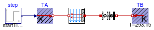
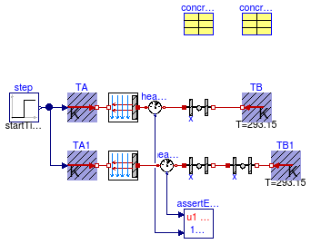
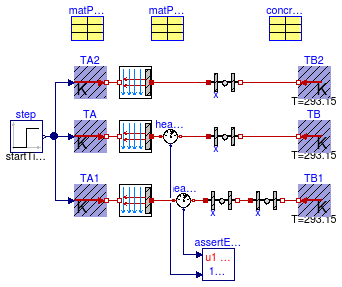

Collection of models that illustrate model use and test models
Information
This package contains examples for the use of models that can be found in
Buildings.HeatTransfer.
Extends from Modelica.Icons.ExamplesPackage (Icon for packages containing runnable examples).
Package Content
Test model for heat conductor initialization
Information
This example illustrates how to initialize heat conductors in steady state and with
predefined temperatures.
Extends from Modelica.Icons.Example (Icon for runnable examples).
Parameters
| Type | Name | Default | Description |
|---|
| Brick | brick | | |
| InsulationBoard | insulation | | |
| Generic | compositeWall | | Composite wall consisting of insulation and material |
Modelica definition
model ConductorInitialization
"Test model for heat conductor initialization"
extends Modelica.Icons.Example;
Buildings.HeatTransfer.Sources.FixedTemperature TB(T=303.15);
Buildings.HeatTransfer.Sources.PrescribedTemperature TA;
parameter Buildings.HeatTransfer.Data.Solids.Brick brick(x=0.18, nStaRef=3);
parameter Buildings.HeatTransfer.Data.Solids.InsulationBoard insulation(x=0.05, nStaRef=2);
parameter Buildings.HeatTransfer.Data.OpaqueConstructions.Generic compositeWall(
material={insulation,brick}, nLay=2)
"Composite wall consisting of insulation and material";
Buildings.HeatTransfer.Conduction.MultiLayer conS1(
A=2,
steadyStateInitial=true,
layers=compositeWall);
Buildings.HeatTransfer.Conduction.SingleLayer conS2(
A=2,
steadyStateInitial=true,
material=brick);
Buildings.HeatTransfer.Conduction.MultiLayer conD1(
A=2,
steadyStateInitial=false,
layers=compositeWall,
T_a_start=288.15,
T_b_start=298.15);
Buildings.HeatTransfer.Conduction.SingleLayer conD2(
A=2,
material=brick,
steadyStateInitial=false,
T_a_start=288.15,
T_b_start=298.15);
Buildings.HeatTransfer.Sources.FixedTemperature TB1(T=303.15);
Buildings.HeatTransfer.Sources.PrescribedTemperature TA1;
Buildings.HeatTransfer.Sources.FixedTemperature TB2(T=303.15);
Buildings.HeatTransfer.Sources.PrescribedTemperature TA2;
Buildings.HeatTransfer.Sources.FixedTemperature TB3(T=303.15);
Buildings.HeatTransfer.Sources.PrescribedTemperature TA3;
Modelica.Blocks.Sources.Step step(
height=10,
offset=283.15,
startTime=43200);
equation
connect(step.y, TA.T);
connect(conS1.port_b, TB.port);
connect(TA.port, conS1.port_a);
connect(conS2.port_b, TB1.port);
connect(TA1.port, conS2.port_a);
connect(TA1.T, step.y);
connect(conD1.port_b, TB2.port);
connect(TA2.port, conD1.port_a);
connect(TA2.T, step.y);
connect(TA3.T, step.y);
connect(TA3.port, conD2.port_a);
connect(conD2.port_b, TB3.port);
end ConductorInitialization;
Test model for heat conductor

Information
This example illustrates how to use a solid material, set its heat capacity to zero,
and then use this material in a multi-layer construction.
The plot window shows that the insulation is computed in steady state, where
as the brick is computed using transient heat conduction.
Extends from Modelica.Icons.Example (Icon for runnable examples).
Modelica definition
Test model for heat conductor

Information
This example tests if two conductors in series computes the same heat transfer
as one conductor with twice the thickness.
The assert block will stop the simulation if the heat exchange with the boundary
condition differs.
Extends from Modelica.Icons.Example (Icon for runnable examples).
Parameters
Modelica definition
model ConductorSingleLayer
"Test model for heat conductor"
extends Modelica.Icons.Example;
Buildings.HeatTransfer.Conduction.SingleLayer con(A=1, material=concrete200);
Buildings.HeatTransfer.Sources.FixedTemperature TB(T=293.15);
Buildings.HeatTransfer.Sources.PrescribedTemperature TA;
Modelica.Blocks.Sources.Step step(
height=10,
offset=293.15,
startTime=3600);
Buildings.HeatTransfer.Conduction.SingleLayer con1(
A=1, material=concrete100);
Buildings.HeatTransfer.Sources.FixedTemperature TB1( T=293.15);
Buildings.HeatTransfer.Sources.PrescribedTemperature TA1;
Buildings.HeatTransfer.Conduction.SingleLayer con2(
A=1, material=concrete100);
Modelica.Thermal.HeatTransfer.Sensors.HeatFlowSensor heaFlo2;
Modelica.Thermal.HeatTransfer.Sensors.HeatFlowSensor heaFlo1;
parameter Buildings.HeatTransfer.Data.Solids.Concrete concrete200(x=0.2, nSta=4);
parameter Buildings.HeatTransfer.Data.Solids.Concrete concrete100(x=0.1, nSta=2);
Buildings.HeatTransfer.Convection.Interior conv1( A=1, til=Buildings.Types.Tilt.Wall)
"Convective heat transfer";
Buildings.HeatTransfer.Convection.Interior conv2( A=1, til=Buildings.Types.Tilt.Wall)
"Convective heat transfer";
equation
connect(con.port_b, TB.port);
connect(step.y, TA.T);
connect(step.y, TA1.T);
connect(con1.port_b, con2.port_a);
connect(con2.port_b, TB1.port);
connect(heaFlo2.port_b, con1.port_a);
connect(heaFlo1.port_b, con.port_a);
connect(TA.port, conv1.fluid);
connect(TA1.port, conv2.fluid);
connect(conv2.solid, heaFlo2.port_a);
connect(conv1.solid, heaFlo1.port_a);
end ConductorSingleLayer;
Test model for heat conduction in a cylinder

Information
This example tests a circular conductor with a constant temperature at his boundary.
Extends from Modelica.Icons.Example (Icon for runnable examples).
Parameters
Modelica definition
model ConductorSingleLayerCylinder
"Test model for heat conduction in a cylinder"
extends Modelica.Icons.Example;
parameter Modelica.SIunits.HeatFlowRate Q_flow=50;
Buildings.HeatTransfer.Conduction.SingleLayerCylinder
con( material=concrete,
steadyStateInitial=false,
final nSta=8,
r_a=0.1,
r_b=3,
h=10,
TInt_start=293.15,
TExt_start=293.15);
Buildings.HeatTransfer.Sources.PrescribedHeatFlow Qa;
parameter Buildings.HeatTransfer.Data.Soil.Concrete concrete;
Modelica.Blocks.Sources.Step step(
offset=0,
height=Q_flow,
startTime=3600);
Buildings.HeatTransfer.Sources.FixedTemperature TBou(T=293.15)
"Boundary condition";
equation
connect(Qa.port, con.port_a);
connect(step.y, Qa.Q_flow);
connect(TBou.port, con.port_b);
end ConductorSingleLayerCylinder;
Test model for heat conductor

Information
This example tests the implementation of the phase-change material (PCM) model.
The phase-change material matPCM is exposed to the same boundary
conditions as the non phase-change material.
In the construction conPCM2, the phase change is around 20.5 °C.
In the construction conPCM, the phase change is around 40.5 °C, which
is above the temperature range simulated in this model.
Therefore, the same result is expected for the PCM material conPCM
as is for two conductors in series.
Note that in case of using matPCM, the internal energy is
the dependent variable, whereas in case of two conductors in series, the temperature
is the dependent variable. However, both models will
produce the same results.
The assert block will stop the simulation
if there is a difference in heat fluxes.
Extends from Modelica.Icons.Example (Icon for runnable examples).
Parameters
| Type | Name | Default | Description |
|---|
| Concrete | concrete100 | | Non-PCM material |
| Generic | matPCM | | PCM material with phase change near 40 degC |
| Generic | matPCM2 | | PCM material with phase change near room temperature |
Modelica definition
model ConductorSingleLayerPCM
"Test model for heat conductor"
extends Modelica.Icons.Example;
Buildings.HeatTransfer.Sources.FixedTemperature TB(T=293.15)
"Temperature boundary condition";
Buildings.HeatTransfer.Sources.PrescribedTemperature TA
"Temperature boundary condition";
Modelica.Blocks.Sources.Step step(
height=10,
offset=293.15,
startTime=360);
Buildings.HeatTransfer.Sources.FixedTemperature TB1(T=293.15)
"Temperature boundary condition";
Buildings.HeatTransfer.Sources.PrescribedTemperature TA1
"Temperature boundary condition";
Modelica.Thermal.HeatTransfer.Sensors.HeatFlowSensor heaFlo2
"Heat flow sensor";
Modelica.Thermal.HeatTransfer.Sensors.HeatFlowSensor heaFlo1
"Heat flow sensor";
Buildings.Utilities.Diagnostics.AssertEquality assertEquality(threShold=1E-8,
startTime=0);
parameter Buildings.HeatTransfer.Data.Solids.Concrete concrete100(x=0.1, nStaRef=4)
"Non-PCM material";
Buildings.HeatTransfer.Convection.Interior conv1( A=1, til=Buildings.Types.Tilt.Wall)
"Convective heat transfer";
Buildings.HeatTransfer.Convection.Interior conv2( A=1, til=Buildings.Types.Tilt.Wall)
"Convective heat transfer";
Buildings.HeatTransfer.Conduction.SingleLayer conPCM(
A=1,
material=matPCM)
"Construction with phase change around 40 degC";
Buildings.HeatTransfer.Conduction.SingleLayer con1(
A=1, material=concrete100)
"Construction without PCM";
Buildings.HeatTransfer.Conduction.SingleLayer con2(
A=1, material=concrete100)
"Construction without PCM";
parameter Buildings.HeatTransfer.Data.SolidsPCM.Generic matPCM(
x=0.2,
k=1.4,
c=840,
d=2240,
nSta=4,
TSol=273.15 + 40.49,
TLiq=273.15 + 40.51,
LHea=100000)
"PCM material with phase change near 40 degC";
Buildings.HeatTransfer.Sources.PrescribedTemperature TA2
"Temperature boundary condition";
Buildings.HeatTransfer.Convection.Interior conv3( A=1, til=Buildings.Types.Tilt.Wall)
"Convective heat transfer";
Buildings.HeatTransfer.Conduction.SingleLayer conPCM2(
A=1,
material=matPCM2)
"Construction with phase change near room temperature";
Buildings.HeatTransfer.Sources.FixedTemperature TB2(T=293.15)
"Temperature boundary condition";
parameter Buildings.HeatTransfer.Data.SolidsPCM.Generic matPCM2(
x=0.2,
k=1.4,
c=840,
d=2240,
nSta=4,
TSol=273.15 + 20.49,
TLiq=273.15 + 20.51,
LHea=100000)
"PCM material with phase change near room temperature";
equation
connect(step.y, TA.T);
connect(step.y, TA1.T);
connect(assertEquality.u1, heaFlo2.Q_flow);
connect(assertEquality.u2, heaFlo1.Q_flow);
connect(TA.port, conv1.fluid);
connect(TA1.port, conv2.fluid);
connect(conv2.solid, heaFlo2.port_a);
connect(conv1.solid, heaFlo1.port_a);
connect(heaFlo1.port_b, conPCM.port_a);
connect(conPCM.port_b, TB.port);
connect(heaFlo2.port_b, con1.port_a);
connect(con1.port_b, con2.port_a);
connect(con2.port_b, TB1.port);
connect(step.y, TA2.T);
connect(TA2.port, conv3.fluid);
connect(conv3.solid, conPCM2.port_a);
connect(conPCM2.port_b, TB2.port);
end ConductorSingleLayerPCM;
Test model for heat conductor
Information
This example illustrates modeling of multi-layer materials. It also tests if the
multi-layer material computes the same heat transfer with its boundary condition
as two instances of a single layer material.
The insulation is computed in steady-state, whereas the brick is computed using transient
heat conduction.
The assert block will stop the simulation if the heat exchange with the boundary
condition differs.
Extends from Modelica.Icons.Example (Icon for runnable examples).
Parameters
Modelica definition
model ConductorSteadyStateTransient
"Test model for heat conductor"
extends Modelica.Icons.Example;
parameter Buildings.HeatTransfer.Data.Solids.Brick brick(x=0.12, nStaRef=4);
parameter Buildings.HeatTransfer.Data.Solids.InsulationBoard insul(
x=0.05,
c=0,
nStaRef=3)
"Insulation";
parameter Buildings.HeatTransfer.Data.OpaqueConstructions.Generic composite(nLay=2, material=
{insul,brick});
Buildings.HeatTransfer.Conduction.MultiLayer conMul(
A=2, layers=composite);
Buildings.HeatTransfer.Conduction.SingleLayer con(
A=2, material=brick);
Buildings.HeatTransfer.Sources.FixedTemperature TB(T=293.15);
Buildings.HeatTransfer.Sources.PrescribedTemperature TA;
Modelica.Blocks.Sources.Step step(
height=10,
offset=293.15,
startTime=3600);
Buildings.HeatTransfer.Conduction.SingleLayer con1(
A=2, material=insul);
Buildings.HeatTransfer.Sources.FixedTemperature TB1(T=293.15);
Buildings.HeatTransfer.Sources.PrescribedTemperature TA1;
Buildings.HeatTransfer.Conduction.SingleLayer con2(
A=2, material=brick);
Buildings.HeatTransfer.Sources.PrescribedTemperature TA2;
Buildings.HeatTransfer.Sources.FixedTemperature TB2(T=293.15);
Modelica.Thermal.HeatTransfer.Sensors.HeatFlowSensor heaFlo1;
Modelica.Thermal.HeatTransfer.Sensors.HeatFlowSensor heaFlo2;
Buildings.Utilities.Diagnostics.AssertEquality assertEquality(threShold=1E-4);
Buildings.HeatTransfer.Convection.Interior conv1(A=2, til=Buildings.Types.Tilt.Wall)
"Convective heat transfer";
Buildings.HeatTransfer.Convection.Interior conv2(A=2, til=Buildings.Types.Tilt.Wall)
"Convective heat transfer";
equation
connect(con.port_b, TB.port);
connect(step.y, TA.T);
connect(step.y, TA1.T);
connect(con1.port_b, con2.port_a);
connect(con2.port_b, TB1.port);
connect(TA2.T, step.y);
connect(heaFlo1.port_b, con1.port_a);
connect(assertEquality.u1, heaFlo2.Q_flow);
connect(assertEquality.u2, heaFlo1.Q_flow);
connect(TA.port, con.port_a);
connect(conMul.port_b, TB2.port);
connect(conMul.port_a, heaFlo2.port_b);
connect(TA1.port, conv1.fluid);
connect(conv1.solid, heaFlo1.port_a);
connect(TA2.port, conv2.fluid);
connect(conv2.solid, heaFlo2.port_a);
end ConductorSteadyStateTransient;
Test model for heat conductor

Information
This example illustrates modeling of multi-layer materials. It also tests if the
multi-layer material computes the same heat transfer with its boundary condition
as two instances of a single layer material.
The insulation and the brick are computed using transient heat conduction.
The assert block will stop the simulation if the heat exchange with the boundary
condition differs.
Extends from Modelica.Icons.Example (Icon for runnable examples).
Parameters
Modelica definition
model ConductorStepResponse
"Test model for heat conductor"
extends Modelica.Icons.Example;
parameter Buildings.HeatTransfer.Data.Solids.Concrete concrete(x=0.12, nStaRef=4);
parameter Buildings.HeatTransfer.Data.Resistances.Carpet carpet
"carpet";
parameter Buildings.HeatTransfer.Data.OpaqueConstructions.Generic composite(
nLay=2,
material={carpet,concrete});
Buildings.HeatTransfer.Conduction.MultiLayer conMul(
A=2, layers=composite);
Buildings.HeatTransfer.Conduction.SingleLayer con(
A=2, material=carpet);
Buildings.HeatTransfer.Sources.FixedTemperature TB(T=293.15);
Buildings.HeatTransfer.Sources.PrescribedTemperature TA;
Modelica.Blocks.Sources.Step step(
height=10,
offset=293.15,
startTime=3600);
Buildings.HeatTransfer.Conduction.SingleLayer con1(
A=2, material=carpet);
Buildings.HeatTransfer.Sources.FixedTemperature TB1( T=293.15);
Buildings.HeatTransfer.Sources.PrescribedTemperature TA1;
Buildings.HeatTransfer.Conduction.SingleLayer con2(
A=2, material=concrete);
Buildings.HeatTransfer.Sources.PrescribedTemperature TA2;
Buildings.HeatTransfer.Sources.FixedTemperature TB2( T=293.15);
Modelica.Thermal.HeatTransfer.Sensors.HeatFlowSensor heaFlo1;
Modelica.Thermal.HeatTransfer.Sensors.HeatFlowSensor heaFlo2;
Buildings.Utilities.Diagnostics.AssertEquality assertEquality(threShold=1E-4);
Buildings.HeatTransfer.Convection.Interior conv1(
A=2, til=Buildings.Types.Tilt.Wall)
"Convective heat transfer";
Buildings.HeatTransfer.Convection.Interior conv2(
A=2, til=Buildings.Types.Tilt.Wall)
"Convective heat transfer";
equation
connect(con.port_b,TB. port);
connect(step.y,TA. T);
connect(step.y,TA1. T);
connect(con1.port_b,con2. port_a);
connect(con2.port_b,TB1. port);
connect(TA2.T,step. y);
connect(heaFlo1.port_b,con1. port_a);
connect(assertEquality.u1,heaFlo2. Q_flow);
connect(assertEquality.u2,heaFlo1. Q_flow);
connect(TA.port,con. port_a);
connect(conMul.port_b,TB2. port);
connect(conMul.port_a,heaFlo2. port_b);
connect(TA1.port, conv1.fluid);
connect(conv1.solid, heaFlo1.port_a);
connect(TA2.port, conv2.fluid);
connect(conv2.solid, heaFlo2.port_a);
end ConductorStepResponse;
Automatically generated Mon Jul 13 14:26:57 2015.
 Buildings.HeatTransfer.Examples.ConductorInitialization
Buildings.HeatTransfer.Examples.ConductorInitialization